Vintage Rugs
Vintage Rugs in Portland, Oregon
Vintage rugs bring authentic patina, softened dyes, and decades of handwoven character into the home. Zagros Rugs curates vintage pieces with history, charm, and practical beauty for Portland customers seeking a rug that feels collected rather than manufactured.
Ask About This Collection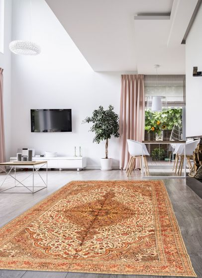
Shop by size
Vintage by rug size
Select a size to browse or add rugs in that size.
Available styles
Vintage Rugs gallery
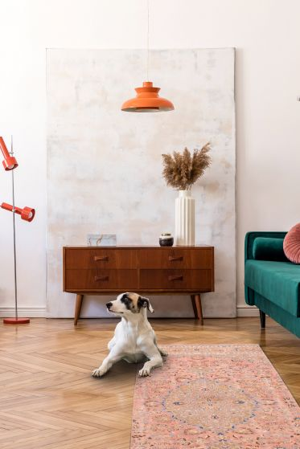
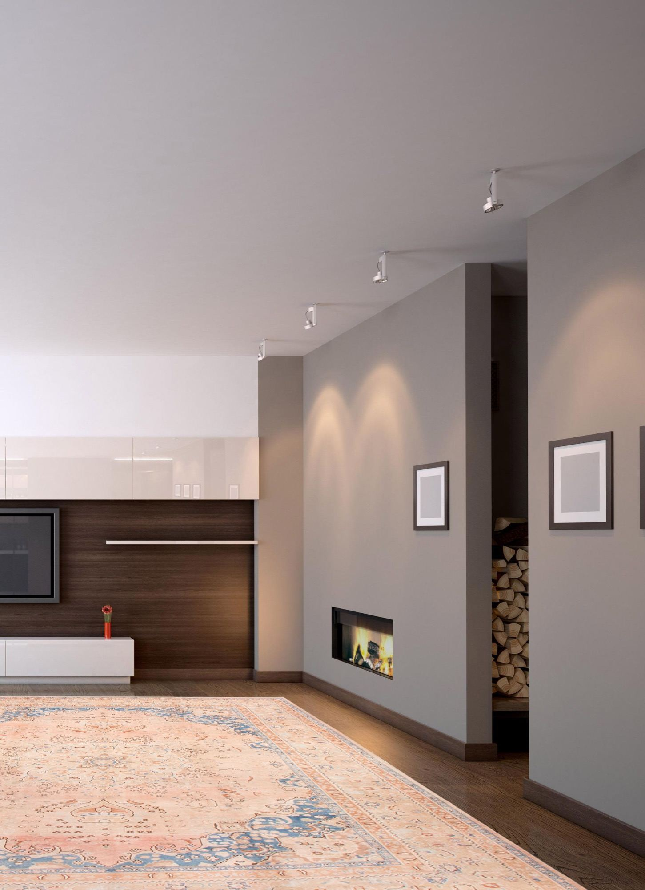
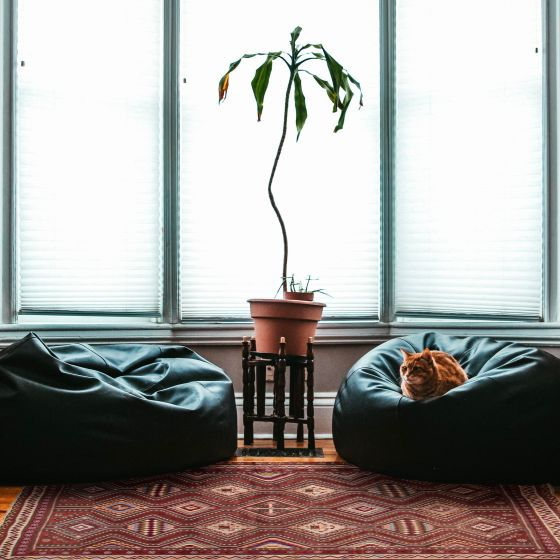
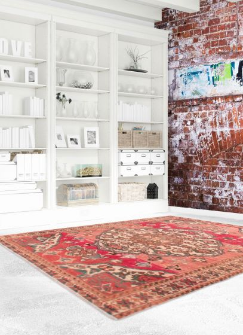
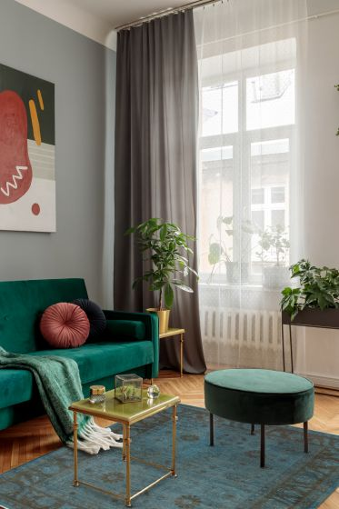
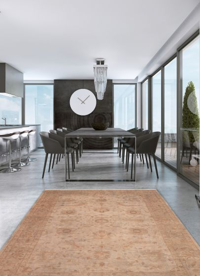
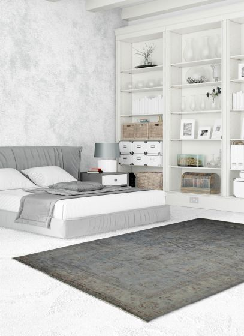
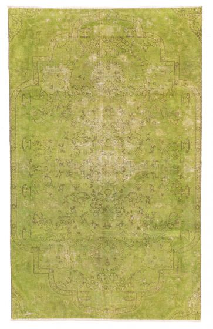
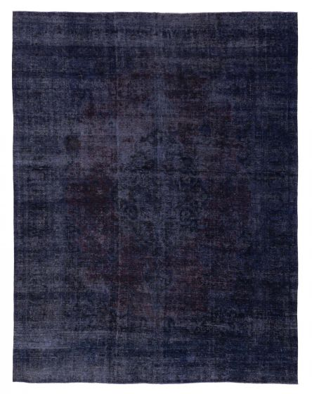
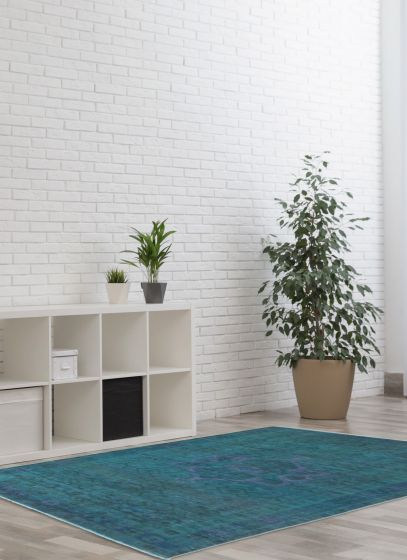
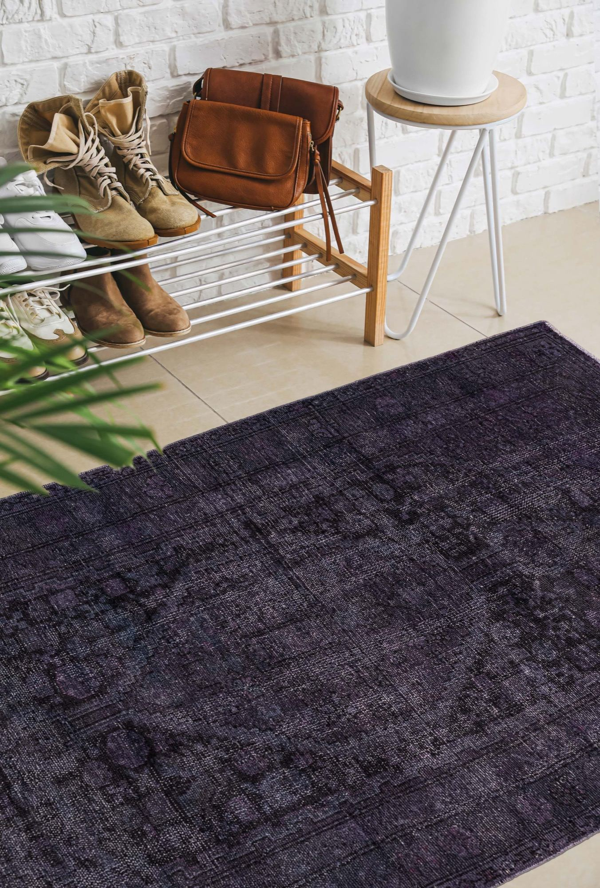
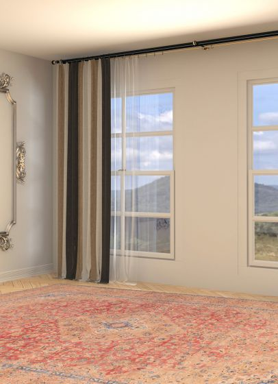
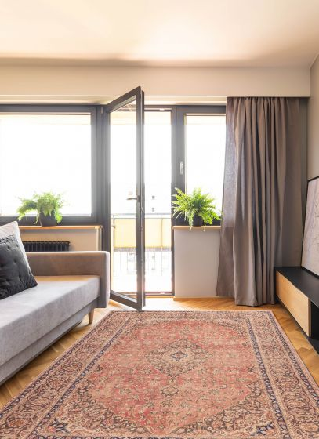

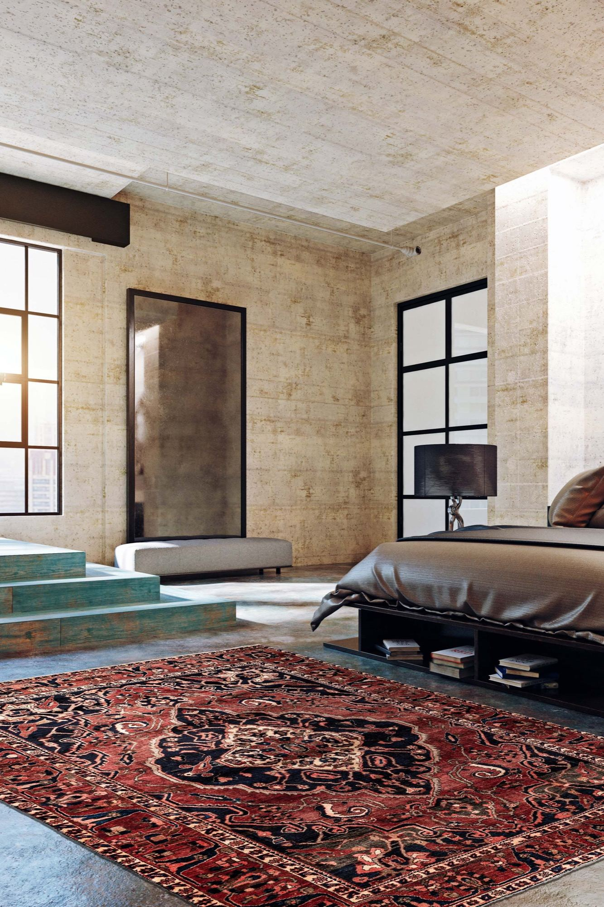
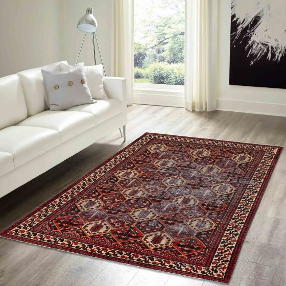
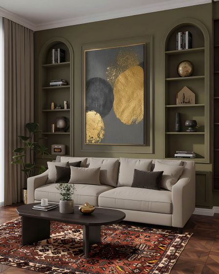
Size collections
Vintage rugs by size
Vintage rugs · 5 × 8 ft
No 5 × 8 ft rugs have been added to this collection yet.
Vintage rugs · 6 × 9 ft
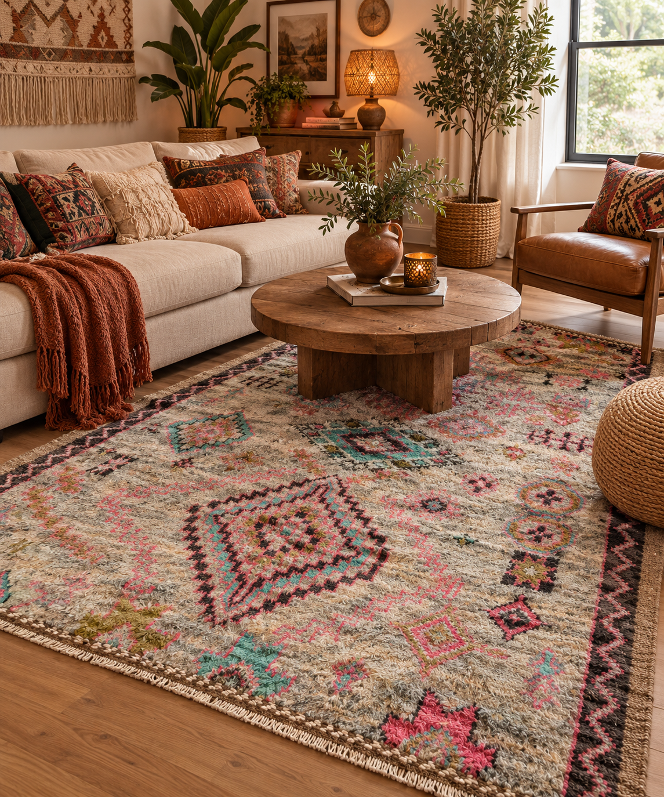
Vintage rugs · 8 × 10 ft
No 8 × 10 ft rugs have been added to this collection yet.
Vintage rugs · 9 × 12 ft
No 9 × 12 ft rugs have been added to this collection yet.
Vintage rugs · 10 × 14 ft
No 10 × 14 ft rugs have been added to this collection yet.